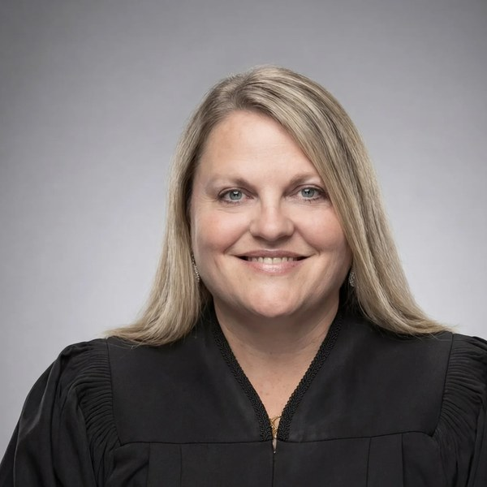

Jaime Hawk
Judge, King County Superior Court (Department 10)
- Seat
- Position 3 — Montoya-Lewis seat — open
- Appointing authority
- Gov. Jay Inslee (D), July 2022, to King County Superior Court (replacing retired Judge Regina Cahan). Subsequently retained by uncontested elections in 2023 and 2024.
- Background
- 25 years across criminal defense and civil rights. ACLU of Washington Legal Strategy Director for Smart Justice (2015–2022), federal public defender (Eastern WA and Idaho), juvenile public defender. Earlier: attorney fellow on the U.S. Senate Judiciary Committee under Sen. Ted Kennedy, worked with then-professor Elizabeth Warren on bankruptcy legislation. Adjunct law professor, Gonzaga Law (juvenile law).
- Reported endorsements
- Gov. Bob Ferguson (sole Position 3 gubernatorial endorsement). State Treasurer Mike Pellicciotti, also her single largest donor at the $4,800 PDC cap. State Sen. Noel Frame, chief Senate architect of the income tax legislation. State Sens. Slatter, Orwall, Wellman, Wilson, Liias, Robinson, Peterson, Chapman, A. Cortes, Riccelli. State Reps. Macri, Berg, Farivar, Doglio, Donaghy, J. Cortes, Salahuddin, Simmons, Ormsby, Lekanoff, Thai. Insurance Commissioner Patty Kuderer, State Auditor Pat McCarthy. Current Justice Helen Whitener; retired Justices Mary Yu and Faith Ireland; Court of Appeals Chief Judge Cecily Hazelrigg and Judges Birk, Hunt, Coburn, Bui. Hawk reports 100+ judges in 28 counties endorsed.
- Fundraising
- Approximately $102,250 raised, $5,117 spent, no debt, no outside expenditures (PDC, late April 2026). Max-out donations from State Treasurer Pellicciotti and other progressive elected officials.
What the record actually shows
Facts pulled from public sources: who appointed them, what they did before, what they've said or written, who's backing them. We're not predicting any vote. Why these categories?
- Endorser coalition The single most diagnostic signal in this race. Sen. Noel Frame, who wrote the millionaires tax legislation, is on her endorsement list. Treasurer Pellicciotti, a prominent income-tax supporter, maxed out to her campaign. Gov. Ferguson singled her out as his only Position 3 endorsement. Politicians who have spent careers trying to enact a graduated income tax do not back judges they expect to vote against them on Article VII.
- Career arc ACLU Smart Justice Director, federal and juvenile public defender, civil rights class action work. The classic progressive legal pipeline. Voluntarily references her work with Elizabeth Warren on bankruptcy reform as a formative “economic justice” experience. Independent press — The Urbanist, Washington Observer — places her clearly to the left of Diaz and Stevens.
- Stare decisis framing At the 36th LD Democrats endorsement interview (May 9, 2026), she explicitly left the door open to overturning precedent when prior reasoning is 'clearly wrong or unworkable' or has produced 'harmful outcomes,' citing the court's recent reckoning with racially harmful precedents as the model. That is precisely the analytical frame income tax advocates use to attack Culliton.
- What she has not said She has made no direct statement on Culliton, Article VII, the millionaires tax, or Quinn v. State. Judicial canons constrain candidates from pre-committing, so the absence is normal. The lean is built on coalition and career signals, not testimony.
How this candidate is likely to rule, and why.
Jaime Hawk is the closest thing the 2026 field has to a transparent progressive proxy on the Culliton question, and her endorser list is the reason. Sen. Noel Frame is the lead Senate sponsor of the income tax legislation that is on track to test the limits of Article VII. State Treasurer Mike Pellicciotti, who has spent his political career arguing for a more progressive Washington tax structure, donated the $4,800 individual cap to her campaign. Gov. Ferguson chose her as his only Position 3 endorsement. None of those signals individually is dispositive, but in combination they form the most income-tax-aligned coalition any candidate in any 2026 Supreme Court race has assembled. Her career arc reinforces that read. Federal public defense, juvenile public defense, ACLU Smart Justice, and civil rights class action work form the standard progressive legal pipeline. She voluntarily cites working with Elizabeth Warren on bankruptcy legislation as an 'economic justice' formation moment. The Urbanist and the Washington Observer independently slot her as the progressive in the Position 3 race, opposite Diaz (moderate) and Stevens (conservative). On stare decisis, her 36th LD interview answer was carefully balanced but unmistakably opened the door to overturning precedent that is 'clearly wrong or unworkable' or has produced 'harmful outcomes.' She cited the court's recent overturning of racially harmful precedents as the model. That is precisely the analytical frame income tax advocates would use to attack the 1933 Culliton court's reasoning. The reason this is Medium and not High is the same reason every judicial lean call has limits: she has made no direct statement on Culliton, Article VII, the millionaires tax, or Quinn. Judicial canons restrict pre-commitment on issues likely to come before the court. It is genuinely possible she holds a stronger procedural commitment to stare decisis than her coalition would imply, and that she would surprise her endorsers from the bench. That is the honest hedge. The base rate, though, is that judges supported by the income-tax architect, the income-tax-friendly Treasurer, and the income-tax-friendly Governor tend to vote in directions those backers expect.
-
Frame endorsement is the strongest single data point
Noel Frame did not just sign onto a long list. She is the legislator most associated with the income tax push. Her endorsement of Hawk is a deliberate signal about who progressives believe will be a reliable vote on the constitutional questions her bill is going to generate.
-
ACLU pipeline
Hawk was the first ACLU of Washington attorney to become a judge in the state. ACLU lawyers do not become judges who side with the state on tax uniformity questions when the political alignment of those questions is anti-progressive.
-
Endorsement breadth vs. depth
100+ judges in 28 counties is unusual for a candidate with no Supreme Court experience and a relatively short bench tenure. That breadth signals an organized intra-judicial mobilization by the progressive legal establishment, not a grassroots groundswell.
-
The 'harmful outcomes' framing matters
Her stare decisis test was not the standard 'we follow precedent except when extraordinary' formulation. She explicitly framed harmful outcomes as a legitimate factor and cited racial harm cases as the precedent. Mapping that frame onto Culliton, which critics frame as the legal barrier to progressive taxation, is a short walk.
An analytical read on public signals. Not a prediction of any individual vote.
Questions a voter might ask this candidate
- How would she apply her 'clearly wrong or unworkable' stare decisis test specifically to a 92-year-old precedent like Culliton?
- Does the 'harmful outcomes' frame she used for racial precedent extend to regressive tax outcomes?
- Would she recuse from a constitutional challenge to the millionaires tax given her endorsement from its lead sponsor?
Phrased to comply with Washington's Code of Judicial Conduct, which prohibits candidates from pledging votes on specific cases or issues likely to come before the court. Methodology questions are permitted.
Sources
- Campaign site
- PDC candidate page
- 36th LD Democrats endorsement interview (YouTube)
- Endorsements page
- Wikipedia: 2026 Washington Supreme Court election
- The Urbanist — Progressives vs. dark money (Apr 30, 2026)
- Washington Observer — Running for the Supremes (Apr 17, 2026)
- The Daily World — WA Supreme Court races (May 12, 2026)
- Columbia Basin Herald — Income tax case (Apr 27, 2026)
- Inslee appointment release (Jul 27, 2022)
- Are you Jaime Hawk or their campaign? Submit a response →